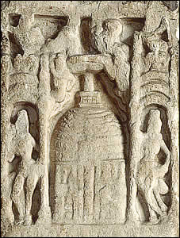

Death of the Buddha
After many years of teaching, the Buddha died at the age of 80. His body was cremated and his ashes were divided into eight parts. The ashes were then deposited in several special mound-shaped monuments called 'stupas'. Umbrellas were sometimes mounted at the top of stupas as a sign of honour and respect. This scene shows a stupa which is a symbol of the Buddha's death. |